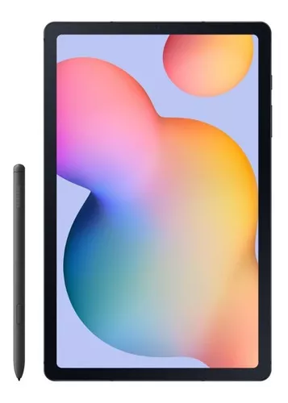

Tablet Samsung Galaxy Tab S S6 Lite SM-P619 10.4" 128GB oxford gray e 4GB de memória RAM
R$ 2.426
26% OFF
em 10x 242 reales con 60 centavos
R$242,60
sem juros
Ver os meios de pagamento
Capacidade:128 GB
64 GB
128 GB
Cor:Oxford gray
Oxford gray
O que você precisa saber sobre este produto
Sistema operacional: Android 12.0.
Com processador Octa-Core Qualcomm Kyro 465 de 2.3GHz.
Resolução da tela de 2000px x 1200px.
Com leitor micro-SD.
Possui GPS.
Memória interna expansível até 1 TB com fonte externa.
Inclui S Pen, capa.
Projetado para levar a qualquer lugar.
Pesa apenas 467g.
A duração da bateria depende do uso que se dê ao produto.
Com entrada para fone de ouvido.
Ver características
Opções de compra:
22 produtos novos a partir de
2426 reales
R$
2.426